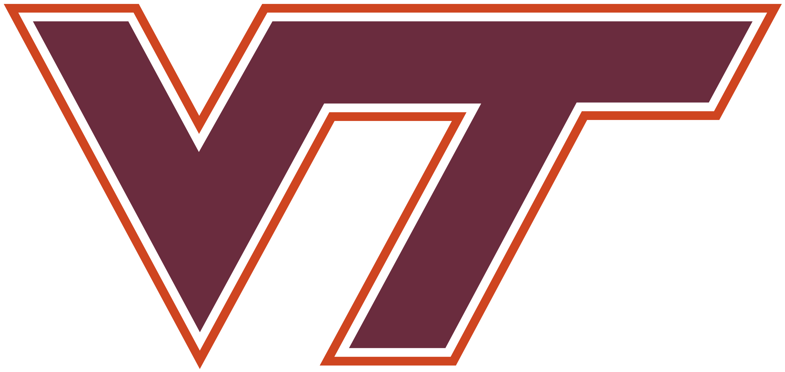
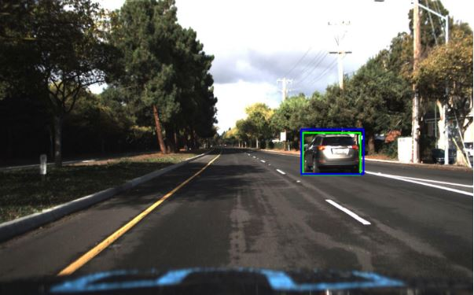
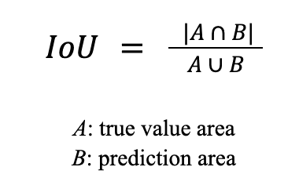
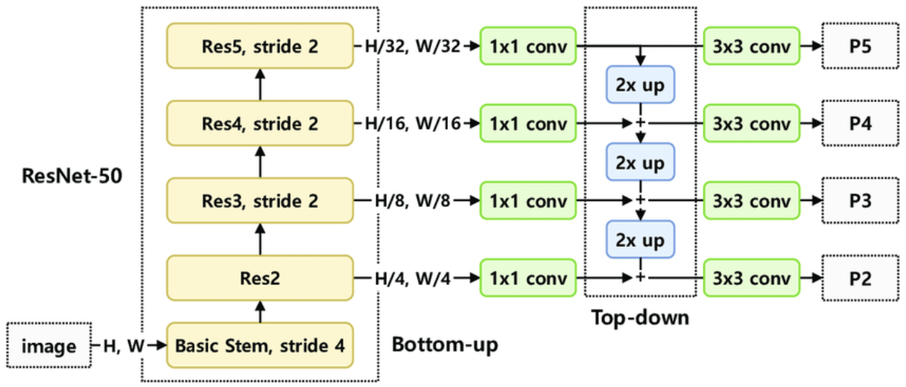
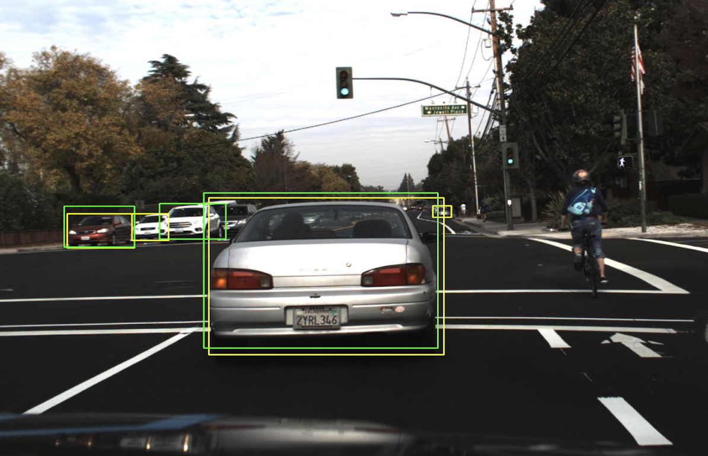
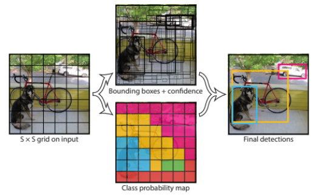
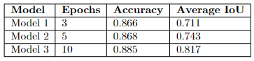
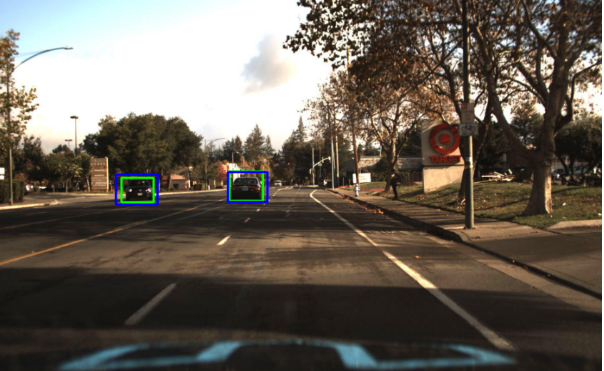
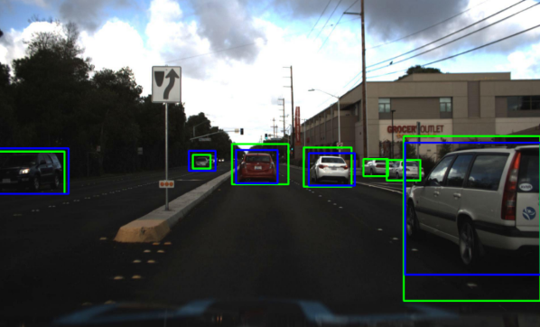
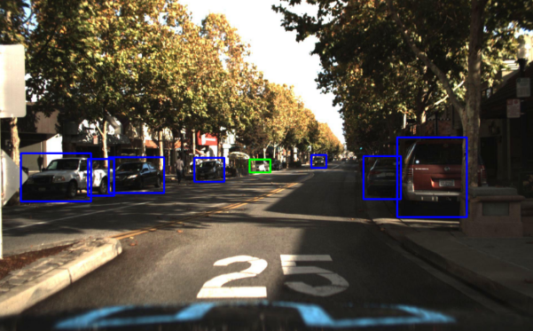

Computer Vision Project
Xinrui Li, Asude Baykal, Kavin Chaisawangwong
As self-driving vehicles or automotive driver assistance have become more widespread in real life, it is important to develop intelligent vehicle detection systems that will improve road safety and driving performance. However, vehicle detection systems encounter many challenges due to the number of vehicles in a traffic, different sized vehicles, and other environmental factors such as air clarity, weather conditions. Therefore, it is important to implement an automated vehicle detection system that can accurately locate a vehicle, and predict its coordinates. This paper implements three car detection methods: OpenCV, ResNet50, and YOLOv5. These methods are trained and evaluated on a supervised learning dataset with 2D images and their annotations. It also compares the mentioned methods using accuracy and intersection over union (IoU) metrics. As a result, it was shown that YOLOv5 performed the best in both of these metrics.

Figure 1 - Vehicle detection system detecting a vehicle on the road from an image
Green box indicates the annotated bounding box
Blue box is the predicted bounding box
Vehicle detection systems using computer vision have been popular during the recent years. These systems can be used for road assistance for drivers and self-driving vehicles. According to vehicle accident statistics, one of the main threats is the other cars on the road [12]. It is also a challenging task to understand the traffic scene as accurately and fast as possible due to the complex traffic conditions and air clarity. Therefore, it is important to develop vehicle detection systems to mitigate the road dangers through automotive vehicle assistance, but also improve the performance of self-driving vehicles.
In this paper, we will be analyzing computer vision-based vehicle detection algorithms that use 2D images from the view of the camera mounted on the vehicle. During our experiments, our goal was to detect the cars and larger vehicles in the given images. However, the scope of the implementation can be extended to detect people, traffic signs, and other vehicles like bicycles. Recently, many methods of object detection have been very successful with the development in deep learning research.
Convolutional neural networks can be used for image classification and object detection. Unfortunately, a simple CNN is not a good fit for object detection because the output of the model is not uniform for all inputs. For example, there can be multiple objects in an image in different locations. On the other hand, CNN based methods for object detection such as R-CNN, fast R-CNN, and YOLO are developed to efficiently find the object occurrences.
Region with CNN features approach, R-CNN, will extract 2000 region proposals from an input image, will compute features for each proposed region, and will classify each region with an SVM [5]. However, there are some limitations to the R-CNN method: using a multi-stage pipeline, expensive training cost, and slow detection [4]. Fast R-CNN approach uses the entire input image to produce feature maps. Then, the produced feature maps are used to extract regions of interest (RoI). RoI pooling layer extracts feature vectors that are fed into a fully connected layer to predict the class and the bounding box values. The YOLO algorithm is inspired by human recognition. Humans can look at an image once and can identify and locate the objects. The YOLO model can also predict the bounding boxes of the objects and their classification simultaneously.
In this paper, three methods for vehicle detection are explored. The first method is the OpenCV method where several traditional methods are tested. However, these traditional methods fail to accurately predict multiple objects on complex images and generalize over a large dataset. Finally, it was decided that using a cascade classifier from OpenCV [2] was the best method to increase generalization for different types of input images and increase the accuracy of prediction. The second method is the Faster R-CNN method. The pretrained Faster R-CNN model in PyTorch is used in our implementation [3]. It uses the ResNet50 convolutional network as the backbone. The last method uses the YOLOv5 model from Ultralytics implemented using the PyTorch framework [9]. The model was trained on our training dataset to improve the prediction accuracy.
For the YOLOv5 model, the dataset needed to be prepared for training, validation and test dataset according to its requirements Images are divided into three folders, and each image has a respective text file including the object annotations which includes the maximum x, maximum y, minimum x, and minimum y values for each object in the image [6]. These values are used to calculate the bounding box parameters. Unfortunately, some of the annotations of the images in our dataset were not complete. Therefore, we need to take some measurements when we calculate our evaluation metrics, details discussed in the Experiments and Results section.
All three methods were evaluated using the test dataset. The accuracy of the predictions and the average IoU metrics were used to evaluate and compare each model to decide which model is best fit for this vehicle detection.
We used the self driving car dataset from Roboflow [11] which contains over 30000 images, and we split them into 80% training set, 10% validation set, 10% test set. However, we found that the given true results for bounding boxes are not always correct. The results sometimes assign several different boxes to one car object which will lower our accuracy. So, before calculating the accuracy, we pre-process the results by deleting the boxes whose coordinate value is less than a certain threshold. We also found that our deep learning models will detect some car objects which are not in the result. We then decided to generate our prediction accuracy by only counting the detected boxes corresponding to the true results.
Output bounding box coordinate of OpenCV method below is in terms of [x center, y center, width, height] of box. All other models’ output will be in terms of [x start, y start, x end, y end], where start is upper left corner, end is lower right corner. Interest of Union (IoU) will be calculated to measure the similarity between the predicted pixel coordinates of each vehicle and the ground truth pixel coordinates. When we get the bounding box vector from model output, we will calculate the rectangle area of both true result and prediction result. IoU can be calculated using formula below:

For the Convolution Neural Network model mentioned in the proposal, we were trying to implement and train a CNN model. We built a model containing 5 convolution layers, with 5 by 5 kernel size. This is followed by two 3 layers of fully connected neural networks, one for object classification and one for bounding boxes. However, we encountered a problem that when multiple cars or overlapping cars in one image, it is difficult for us to make correct detections. We also tried hundreds of images with only one car in it, and the prediction result was not even close. Hence, we put more efforts on the Faster R-CNN Resnet 50 and YOLO model for deep learning methods.
OpenCV Method
For the OpenCV method, we have tried several different traditional methods like circle detection, canny edge (contour) detection and color threshold. However, these methods don’t generalize well on the dataset we use. For example, circle detection works well when the picture is taken from the side of the car object; we can detect two wheels and calculate the approximate location of center of the vehicle. Canny edge detector and color threshold also work well when the background of objects is clean and in light color (day time picture or speed camera where the background is road). However, our dataset images are mostly in driver’s perspective where the camera is mounted on the car, hence most car objects are facing forward or backward. Some images are taken during night time so it’s also hard to implement edge detection.
Hence, we decided to use cascade classifier in OpenCV [2], instead of detecting the whole image using different scales of edge, line and diagonal detectors, these detectors are grouped into different stages; large scale detectors are being implemented first. If it passes, apply the second stage of features in a smaller and more detailed scale. The area which passes all the stages is a car detection.
It appears that the cascade classifier works pretty good on the raw images, and the performance becomes worse if we put extra pre-processing on the image like dilation or thresholds. So, we only use a 5 by 5 gaussian filter to smooth the image which will shorten the image processing time. We also used the pre-trained car.xml file which contains all the features and weights to classify the objects in different scales and return the bounding box location [1]. However, the classifier will sometimes detect the same car in different scales and will report detections several times. We solved this problem by setting a threshold of 20 pixels, and deleting the detection result that the distance between bounding boxes’ center is less than the threshold. Image below is one of our outputs, we can see that yellow boxes (detected results) have much larger boxed areas than the green boxes (true results), this means that the IoU result will be very low even though the model has correct detection. We then decide to use only the true positive accuracy to evaluate the performance. We can also see that there's some wrong detections, classifying the sky or car window as cars due to the limitation of classifiers will also lower the accuray.

Figure 2: The OpenCV method is not able to accurately detect all the annotated vehicles. The bounding boxes of the annotated vehicles are green and the predicted vehicles are yellow.
The final prediction accuracy on 7500 test images is 25.004%, which is under our expectation since the model is pre-trained and doesn’t use any deep learning techniques. The IoU accuracy score was not calculated due to the low prediction score.
Faster R-CNN - Resnet50 Method
In this part, we used a pre-trained model “fasterrcnn_resnet50_fpn” imported from PyTorch [4] which uses the backbone of Resnet 50 FPN.

Figure 3 - Architecture of backbone of Resnet 50 FPN [7]
This model is much faster than traditional methods like selective search, it uses region of interest pooling layer to extract features from each region. We normalized the input image values and transposed the color order to pytorch training model format.
Output of the model returns List[Dict[Tensors]], where the Dict contains bounding boxes, labels and confidence scores (similarity scores). We picked label 3 (car label) and only chose boxes which have more than 90% confidence score. From the output image below, we can see that our model sometimes makes correct predictions but not in true results as we discussed in this section earlier.

Figure 4 - The Faster R-CNN model shows better performance in vehicle detection. The bounding boxes of the annotated vehicles are green and the predicted vehicles are yellow.
The final classification prediction score is 72.339% and IoU accuracy score is 70.279%, which is much better than the OpenCV method, and it turns out that we can also use this model to find locations of traffic lights and pedestrians for extended purposes.
YOLO Method
YOLO (You Only Look Once) is an object detection algorithm that simultaneously detects both the location and the type of objects. It also performs faster and more accurately than traditional methods. One of the reasons why the YOLO algorithm is faster than the other methods is the fact that it uses the entire image during the training and the test instead of using a sliding window or a region-proposal based technique [8]. Using the entire image gives YOLO algorithm the advantage of being able to see the larger context of the image hence reducing the background errors.

Figure 5 - YOLO Model [9]
As you can see above, the image is divided into SxS grids where each grid cell is used to predict the bounding boxes and corresponding confidence score to evaluate if there is an object in the box and if there is how accurate the prediction is. For each bounding box, there are 5 predictions: x_center, y_center, width, height and confidence. The confidence score is calculated by the IOU score. Grid cells are also used to predict the conditional class probabilities C = P(Classi | Object). Non-max suppression is used to eliminate the bounding boxes with low confidence scores. The architecture of YOLOv5 can be found below.

Figure 6 - YOLOv5 Architecture [8]
For this project, the YOLOv5 model was used for training and testing on Google Colab. Yolov5 uses the PyTorch framework. It is a convolutional network that consists of three main parts: backbone, neck, and head. The backbone is a convolutional neural network that is used as a feature extractor. In YOLOv5, CSPDarknet53 is used for the backbone. For the neck, PANet is applied to construct feature pyramids from the different layers of backbone to improve the prediction accuracy with different sized objects. Lastly, the head is a YOLO layer used to make the final predictions in multi-scales. [13]
In the previous models, we used the images and the annotations.csv file for our implementation. However, we needed to convert the dataset into YOLOv5 format so that the images set is partitioned into three parts with the respective text file for each image. As mentioned above our dataset is very large so training is computationally costly. Therefore, smaller epochs were used during hyperparameter tuning. It was shown that the model performance increases as the epochs increase. You can see the details in Table 1.

Table 1: YOLOv5 Parameter Tuning
YOLOv5 has performed very successfully during vehicle detection. The model is able to predict different types of objects in an image such as traffic sign, person, and more. As a result, the output also includes not only the bounding box variables but also the classification of the object. For our purposes, we selected to use the objects that are predicted as car, truck and bus. It was observed that the model even detected some of the vehicles that were not annotated. Therefore, the same approach described in the Experiments and Results section was used during calculating the evaluation metrics.

Figure 7 - The predictions of the YOLOv4 model. Blue indicates the predicted bounding boxes whereas the green indicates the annotated bounding boxes.
As you can see both of the vehicles were correctly predicted. Overall, the highest prediction accuracy of the YOLOv5 model is 88.5% and the average IoU accuracy score is 81.7%.
Some results of vehicle prediction of each model are shared above. A successful prediction will predict all the annotated vehicles like the YOLOv5 example. However, the model may not be able to detect all the objects due to various reasons such as the size and the intersection of objects like in the image below.

Figure 8 - Blue indicates the predicted bounding boxes whereas the green indicates the annotated bounding boxes.
In Figure 8, it is observed that 5/7 cars in the image were detected correctly. However, YOLOv5 was unable to detect the two vehicles that are both smaller than the others and overlapping on each other.

Figure 9 - Blue indicates the predicted bounding boxes whereas the green indicates the annotated bounding boxes.
As you can see in Figure 9, some of the predictions of the models were not able to be used for evaluation because of the missing annotated bounding boxes. For example, the image above shows several vehicles that are correctly predicted by YOLOv5. However, the model misses the only vehicle that was annotated. This shows that the annotated dataset should be corrected for future use.
You can see the performance comparison of the three of our models above. The OpenCV method is our baseline model that uses a simple classifier for object detection. As you can see, the prediction accuracy is very low. Due to the low prediction accuracy, it was not possible to calculate the average IoU accuracy. The second best model is the Faster R-CNN ResNet50 model. It has definitely higher prediction accuracy than our baseline model. The average IoU is also 70.3% which is comparable to the best model YOLOv5. As predicted according to our literature review, the best model is the YOLOv5 with average prediction accuracy of 88.5% and the average IoU score of 81.7%.
This report has implemented three vehicle detection methods and compared their performance. Overall, it was an interesting project where our team got a chance to explore traditional and state-of-the-art methods of object detection. It was realized that the traditional methods were not able to achieve successful results due to not being able to adapt complex conditions. However, both of the deep learning approaches show better performance in prediction accuracy and the average IoU score. They definitely show promising results for use in the future. Their performance can be improved by training it with more data and for longer epochs. It would be better to achieve higher scores before using them in real life situations. 88.5% prediction accuracy can be seen as high for experimental purposes however if this vehicle detection system is used for self-driving systems, it would cause accidents. The scope of the detection can be expanded to be able to predict not only the vehicles but also the people and traffic signs to improve their usability in a real life scenario.
-
262588213843476, “Cars.xml,” Gist. [Online]. Available: https://gist.github.com/199995/37e1e0af2bf8965e8058a9dfa3285bc6.
-
“CV::Cascadeclassifier class reference,” OpenCV. [Online]. Available: https://docs.opencv.org/3.4/d1/de5/classcv_1_1CascadeClassifier.html.
-
“FASTERRCNN_RESNET50_FPN¶,” fasterrcnn_resnet50_fpn - Torchvision 0.14 documentation. [Online]. Available:
-
Girshick, R. "Fast r-cnn." Proceedings of the IEEE international conference on computer vision. 2015.
-
Girshick, R., Donahue, J., Darrell T. and Malik, J. (2014) “Rich Feature Hierarchies for Accurate Object Detection and Semantic Segmentation.” Available at: https://arxiv.org/pdf/1311.2524v5.pdf.
-
Kathuria, A. (2020) “How to Train YOLOv5 on a Custom Dataset”, PaperspaceBlog, Available at: https://blog.paperspace.com/train-yolov5-custom-data/
-
Lee,I., Kim, D., Wee, D., and Lee, S. (2021) “An efficient human instance-guided framework for Video action recognition,” Sensors, vol. 21, no. 24, p. 8309, 2021.
-
Nepal , U. and Eslamia, H. (2022) “Comparing YOLOv3, YOLOv4 and YOLOv5 for Autonomous Landing Spot Detection in Faulty UAVs.” Available at: https:// doi.org/10.3390/s22020464
-
PyTorch Hub, “YOLOv5 Documentation”, Available at: https://docs.ultralytics.com/tutorials/pytorch-hub/
-
Redmon, J. Divvala,S., Girschick, R., and Farhadi, A. (2018) “You Only Look Once: Unified, Real-Time Object Detection,” CoRR, abs/1506.02640. Available at: http://arxiv.org/abs/1506.02640
-
Roboflow, “Udacity Self Driving Car Object Detection Dataset - fixed-small”, https://public.roboflow.com/object-detection/self-driving-car/3/download
https://pytorch.org/vision/stable/models/generated/torchvision.models.detection.fasterrcnn_resnet50_fpn.html.
-
Song, H., Liang, H., Li, H. et al. Vision-based vehicle detection and counting system using deep learning in highway scenes. Eur. Transp. Res. Rev. 11, 51 (2019). https://doi.org/10.1186/s12544-019-0390-4
-
Xu, R., Lin, H., Lu, K., Cao, L., Liu, Y... (2021). A Forest Fire Detection System Based on Ensemble Learning. Forests. 12. 217. 10.3390/f12020217 , Available at: https://www.researchgate.net/publication/349299852_A_Forest_Fire_Detection_System_Based_on_Ensemble_Learning